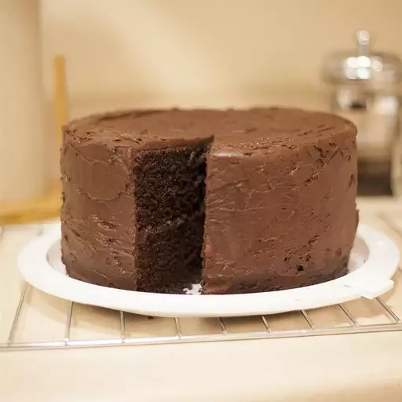

The absolute best, richest, and easiest one-bowl chocolate cake recipe ever! It's great topped with chocolate cream cheese frosting!
Ok folks, this cake will put you in chocolate heaven. Have tried many recipes from this site and this one wins by a landslide. To be objective, I made this to the T the first time. It was fantastic. Moist, dark, rich. But after that, I've been using buttermilk in place of regular milk and used cake flour instead of regular flour (same amount) and the cake was super moist. I've learned when it comes to baking, using buttermilk where a recipe calls for milk makes everything more moist and fluffy. If Cake Flour is available, use. Be sure to add 2 extra tablespoons of cake flour for every cup of regular flour. The cake flour made it extra light and tender. No need for vinegar if using buttermilk. The 'sour' in buttermilk reacts with the leavening agents - baking powder/soda - which makes the cake rise and moist. I've also increased cocoa to 1 full cup & added 2 extra tablespoon sugar when I do, for a devils food style cake. And forget all the 'multi-bowl cake recipes'. This is so easy in prep and clean-up. Too good to be true, but it is. I usually bake mine in a 10" bundt (cooking time appx. 38-40 min.) or two 9" cake pans (25 min.). When making a layer cake, try frosting it with German Chocolate Frosting II (from this site) for ultimate decadence. You will get raves for this - even you first time bakers can't get this wrong. Update - Drizzle this with Chocolate Ganache - superb.